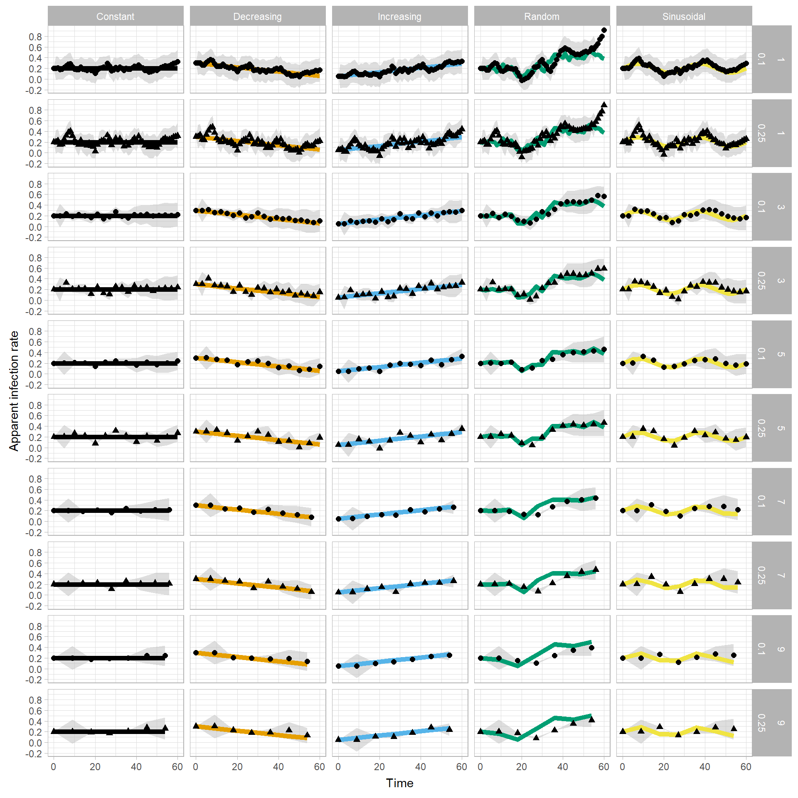
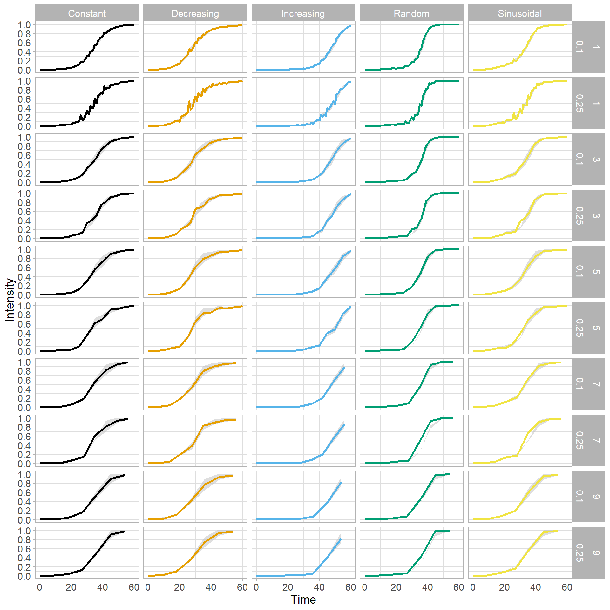
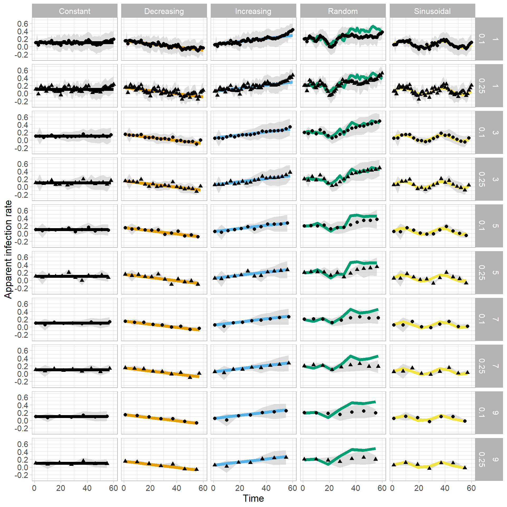
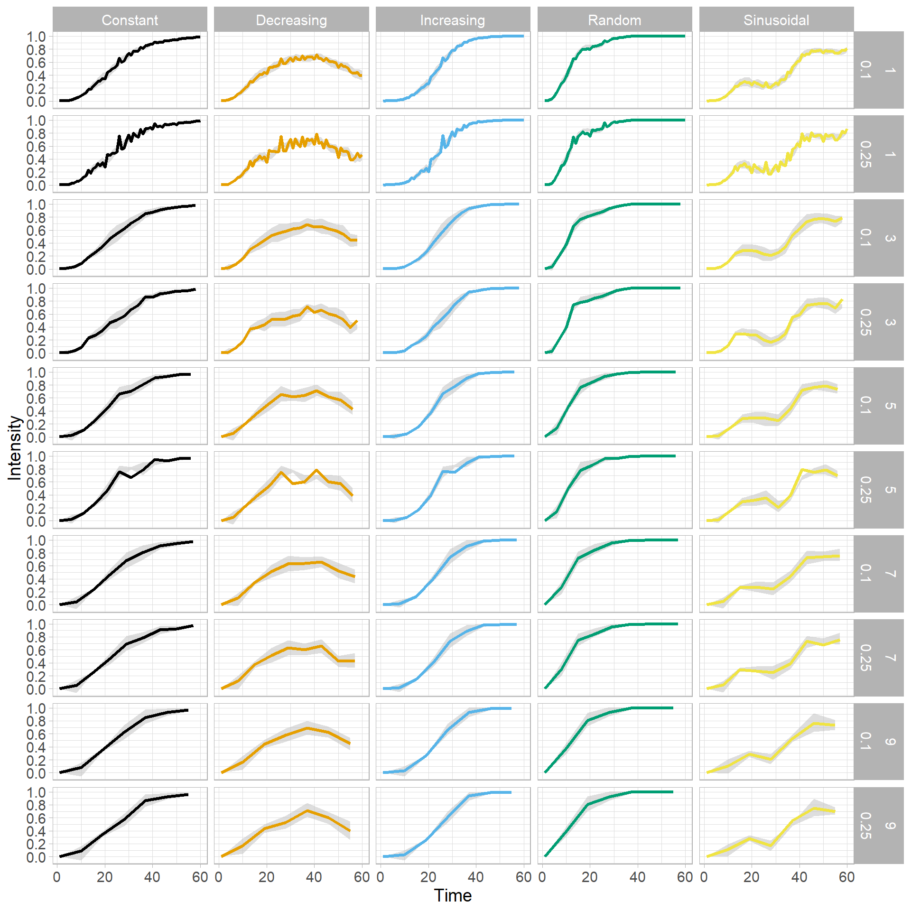
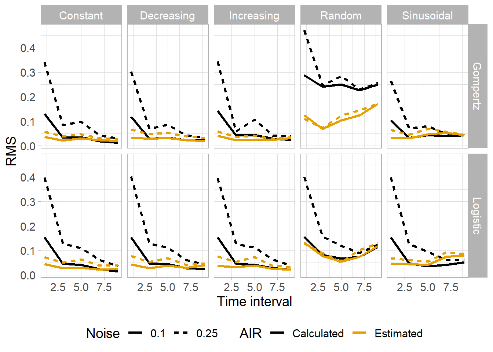
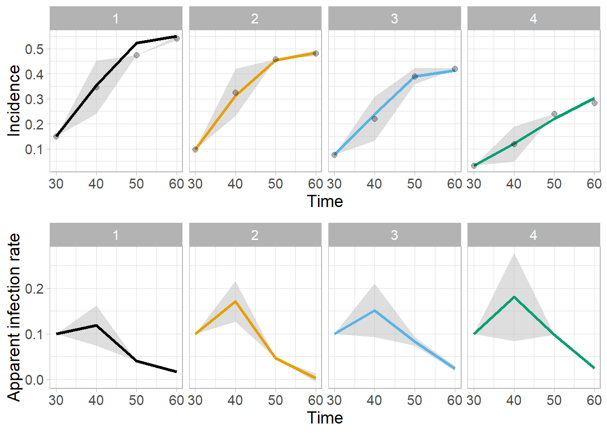

Document analysis
Packages
Load the packages needed to the analysis
library(tidyverse)
library(ggthemes)
library(readxl)
library(cowplot)
library(viridis)
library(agricolae)
library(DescTools)
library(deSolve)ggplot2 global theme
theme_set(theme_light())functions
The fuction for simulation of the measures and particle filter are called here.
source("logistic.R")
source("gompertz.R")
source("monomolecular.R")
source("particle_filter2.R")Estimation for logistic model
Here we set the initial values for simulation of each type of infection rate behavior.
logi_setup = matrix(
c("Constant", 0.2,
"Increasing", 0.05,
"Decreasing", 0.3,
"Sinusoidal", 0.2,
"Random", 0.2),
nrow=5,ncol=,byrow = TRUE) Run the particle filter for each type of infection rate and for each time interval
noise = c(0.1, 0.25)
logistic_all3 = data.frame()
for(j in 1:2){
logistic_all2 = data.frame()
for(k in seq(1,10, by = 2)){
logistic_all = data.frame()
for( i in 1:5){
set.seed(5)
data = logistic(N= 60, dt=0.5, y0=0.001, r=as.numeric(logi_setup[i,2]), sd = noise[j], inf = i)
data = data %>%
filter(time %in% c(seq(0,60, by = k)))
data_logi = data.frame(infection_type = as.factor(logi_setup[i,1]),
SIR_filter(model = 1,
guess_r = as.numeric(logi_setup[i,2]),
Nparti=100,
measures = data$Randon_intensity,
time = data$time,
sd_meas = 0.25,
sd_par = 0.15,
sd_model = 0.005),
y = data$Randon_intensity,
inf_rate = data$inf_rate)
logistic_all = logistic_all %>%
bind_rows(data_logi)
}
logistic_all = logistic_all %>%
mutate(time_interval = k)
logistic_all2 = logistic_all2 %>%
bind_rows(logistic_all)
}
logistic_all2 = logistic_all2 %>%
mutate(noise = noise[j])
logistic_all3 = logistic_all3 %>%
bind_rows(logistic_all2)
}logistic_all3 %>%
ggplot()+
geom_ribbon(aes(time, ymin = (ubdsiro), ymax = (lbdsiro), fill = "Ic 99%"), alpha = 0.5, stat = "identity") +
geom_line(aes(time,inf_rate, color = infection_type),
size = 2)+
geom_point(aes(time,sinti, shape = as.factor(noise)),
size = 2)+
facet_grid(time_interval+noise~infection_type)+
scale_fill_manual(values = "gray")+
scale_color_colorblind()+
labs(x = "Time",
y = "Apparent infection rate")+
theme(legend.position = "none")+
scale_y_continuous(breaks = seq(-2,2, 0.2))
ggsave("figs/logistic_air.png", dpi=300, height = 10, width = 10)logistic_all3 %>%
ggplot()+
geom_ribbon(aes(time, ymin = (ubdsir), ymax = (lbdsir), fill = "Ic 99%"), alpha = 0.5, stat = "identity") +
geom_line(aes(time,y, color = infection_type),
size = 2)+
geom_point(aes(time,xestsir, shape = as.factor(noise)),
size = 2)+
facet_grid(time_interval+noise~infection_type)+
scale_fill_manual(values = "gray")+
scale_color_colorblind()+
labs(x = "Time",
y = "Intensity")+
theme(legend.position = "none")+
scale_y_continuous(breaks = seq(0,1, 0.2))
ggsave("figs/logistic_curve.png", dpi=300, height = 10, width = 10)Acuracy
a = logistic_all3 %>%
group_by(infection_type,time_interval, noise) %>%
mutate(rmsi = (inf_rate - sinti)^2,
maei = abs(inf_rate - sinti)) %>%
summarise(RMS = sqrt((1/(length(inf_rate)))*sum(rmsi, na.rm = T)),
MAE = mean(maei)) %>%
mutate(model = "Logistic")
b = logistic_all3 %>%
group_by(infection_type,time_interval,noise) %>%
filter(y < 1) %>%
mutate(rmsi = (inf_rate - sinti)^2,
maei = abs(inf_rate - sinti)) %>%
summarise(RMS.1 = sqrt((1/(length(inf_rate)))*sum(rmsi, na.rm = T)),
MAE.1 = mean(maei))
acuracy_logi = left_join(a, b)## Joining, by = c("infection_type", "time_interval", "noise")Estimation for Gompertz model
gompi_setup = matrix(
c("Constant", 0.1,
"Increasing", 0.05,
"Decreasing", 0.15,
"Sinusoidal", 0.05,
"Random", 0.2),
nrow=5,ncol=,byrow = TRUE) noise = c(0.1, 0.25)
gompertz_all3 = data.frame()
for(j in 1:2){
gompertz_all2 = data.frame()
for(k in seq(1,10, by = 2)){
gompertz_all = data.frame()
for(i in 1:5){
set.seed(5)
data = gompertz(N= 60, dt=0.5, y0=0.001,r=as.numeric(gompi_setup[i,2]), sd = noise[j], inf = i)
data = data %>%
filter(time %in% c(seq(1,60, by = k)))
data_gompi = data.frame(infection_type = as.factor(gompi_setup[i,1]),
SIR_filter(model = 2,
guess_r = as.numeric(gompi_setup[i,2]),
Nparti=100,
measures = data$Randon_intensity,
time = data$time,
sd_meas = 0.25,
sd_par = 0.15,
sd_model = 0.005),
y = data$Randon_intensity,
inf_rate = data$inf_rate)
gompertz_all = gompertz_all %>%
bind_rows(data_gompi)
}
gompertz_all = gompertz_all %>%
mutate(time_interval = k)
gompertz_all2 = gompertz_all2 %>%
bind_rows(gompertz_all)
}
gompertz_all2 = gompertz_all2 %>%
mutate(noise = noise[j])
gompertz_all3 = gompertz_all3 %>%
bind_rows(gompertz_all2)
}gompertz_all3 %>%
ggplot()+
geom_ribbon(aes(time, ymin = (ubdsiro), ymax = (lbdsiro), fill = "Ic 99%"), alpha = 0.5, stat = "identity") +
geom_line(aes(time,inf_rate, color = infection_type),
size = 2)+
geom_point(aes(time,sinti, shape = as.factor(noise)),
size = 2)+
facet_grid(time_interval+noise~infection_type)+
scale_fill_manual(values = "gray")+
scale_color_colorblind()+
labs(x = "Time",
y = "Apparent infection rate")+
theme(legend.position = "none",text = element_text(size = 14))+
scale_y_continuous(breaks = seq(-2,2, 0.2))
ggsave("figs/gompertz_air.png", dpi=300, height = 10, width = 10)gompertz_all3 %>%
ggplot()+
geom_ribbon(aes(time, ymin = (ubdsir), ymax = (lbdsir), fill = "Ic 99%"), alpha = 0.5, stat = "identity") +
geom_line(aes(time,y, color = infection_type),
size = 2)+
geom_point(aes(time,xestsir, shape = as.factor(noise)),
size = 2)+
facet_grid(time_interval+noise~infection_type)+
scale_fill_manual(values = "gray")+
scale_color_colorblind()+
labs(x = "Time",
y = "Intensity")+
theme(legend.position = "none",text = element_text(size = 14))+
scale_y_continuous(breaks = seq(-2,2, 0.2))
ggsave("figs/gompertz_curve.png", dpi=300, height = 10, width = 10)Acuracy
c = gompertz_all3 %>%
group_by(infection_type,time_interval, noise) %>%
mutate(rmsi = (inf_rate - sinti)^2,
maei = abs(inf_rate - sinti)) %>%
summarise(RMS = sqrt((1/(length(inf_rate)))*sum(rmsi, na.rm = T)),
MAE = mean(maei)) %>%
mutate(model = "Gompertz")
d = gompertz_all3 %>%
group_by(infection_type,time_interval,noise) %>%
filter(y < 1) %>%
mutate(rmsi = (inf_rate - sinti)^2,
maei = abs(inf_rate - sinti)) %>%
summarise(RMS.1 = sqrt((1/(length(inf_rate)))*sum(rmsi, na.rm = T)),
MAE.1 = mean(maei)) %>%
mutate(model = "Gompertz")
acuracy_gompi = left_join(c, d)## Joining, by = c("infection_type", "time_interval", "noise", "model")Calculate the Apparent infection rate
Simulated epidemics
calc_r_log = logistic_all3 %>%
group_by(infection_type,time_interval,noise) %>%
mutate(r_calc = (log(y/(1-y)) - log((lag(y,1)/(1-(lag(y,1))))))/(time - lag(time,1))) %>%
mutate(model = "Logistic")
calc_r_gomp =gompertz_all3 %>%
group_by(infection_type,time_interval,noise) %>%
mutate(r_calc = (-log(-log(y))--log(-log(lag(y,1))))/(time - lag(time,1))) %>%
mutate(model = "Gompertz")
calculated_r = bind_rows(calc_r_log,calc_r_gomp)
calculated_r$model = factor(calculated_r$model, levels=c("Logistic","Gompertz"), labels=c("Logistic","Gompertz")) calculated_r %>%
ggplot()+
geom_line(aes(time,inf_rate, color = infection_type),
size = 2)+
geom_point(aes(time,r_calc),
size = 2,
alpha = 1)+
facet_grid(time_interval+model~infection_type)+
scale_fill_viridis()+
scale_color_colorblind()+
labs(x = "Time",
y = "Apparent infection rate")+
guides(color= guide_legend("none"))+
xlim(0,60)+
theme(text = element_text(size = 14))## Warning: Removed 100 rows containing missing values (geom_point).
# ggsave("figs/simulated_r_calc.png", dpi=300, height = 4, width = 6)Acuracy
acuracy_calc = calculated_r%>%
filter(r_calc != is.na(r_calc)) %>%
group_by(model,infection_type, time_interval,noise) %>%
mutate(rmsi = (inf_rate - r_calc)^2,
maei = abs(inf_rate - r_calc)) %>%
summarise(RMS = sqrt((1/(length(inf_rate)))*sum(rmsi, na.rm = T)),
CCC = CCC(inf_rate ,r_calc)$rho.c$est,
MAE = mean(maei))bind data.frames of both models
acuracy_est =bind_rows(acuracy_logi,acuracy_gompi) Visualization
RMS
plotting the RMS
ggplot()+
geom_line(data =acuracy_calc, aes(time_interval, RMS, color = "Calculated", linetype = as.factor(noise)),
size = 1.2)+
geom_line(data =acuracy_est, aes(time_interval, RMS, color = "Estimated", linetype = as.factor(noise)),
size = 1.2)+
scale_color_colorblind("AIR")+
scale_fill_colorblind()+
facet_grid(model~infection_type)+
labs(x = "Time interval", y = "RMS", linetype = "Noise")+
theme(legend.position = "bottom",text = element_text(size = 14))
ggsave("figs/RMS.png", dpi=300, height = 6, width = 10)Actual epidemics
Load the data
real = read_xlsx("actual_epidemic.xlsx")
head(real)Calculate incidence means
inc_real = real %>%
group_by(trat,time) %>%
summarise(inc = mean(as.numeric(y))) %>%
spread(trat, inc)
head(inc_real)Calculate uncertainty
uncer = real %>%
group_by(trat, time) %>%
summarise(sd = sd(as.numeric(y))) %>%
group_by(trat) %>%
summarise(sd = mean(sd))
head(uncer)Estimated AIR
Run the Particle filter
actual_all = data.frame()
real_matrix = as.matrix(inc_real)
colnames(real_matrix) = NULL
for(i in 1:4){
data_actual = data.frame(curve = as.factor(i),
SIR_filter(model = 3,
guess_r = 0.1,
Nparti=100,
measures = real_matrix[,i+1],
time = inc_real$time,
sd_meas = uncer$sd[i],
sd_par = .3,
sd_model = 0.05,
dt= 7),
y = real_matrix[,i+1])
actual_all = actual_all %>%
bind_rows(data_actual)
}## Warning in bind_rows_(x, .id): Unequal factor levels: coercing to character## Warning in bind_rows_(x, .id): binding character and factor vector,
## coercing into character vector
## Warning in bind_rows_(x, .id): binding character and factor vector,
## coercing into character vector
## Warning in bind_rows_(x, .id): binding character and factor vector,
## coercing into character vector
## Warning in bind_rows_(x, .id): binding character and factor vector,
## coercing into character vectorVisualization
plot_grid( actual_all %>%
ggplot()+
geom_ribbon(aes(time, ymin = (ubdsir), ymax = (lbdsir), fill = "Ic 99%"), alpha = 0.5, stat = "identity") +
geom_line(aes(time,y, color = curve),
size = 1.2)+
geom_point(aes(time,xestsir),
size = 2,
alpha = 0.3)+
facet_wrap(~curve, nrow = 1)+
scale_fill_manual(values = "gray")+
scale_color_colorblind()+
labs(x = "Time",
y = "Incidence")+
theme(legend.position = "none",text = element_text(size = 14)),
actual_all %>%
ggplot()+
geom_ribbon(aes(time, ymin = (ubdsiro), ymax = (lbdsiro), fill = "Ic 99%"), alpha = 0.5, stat = "identity") +
geom_line(aes(time,sinti, color = curve),
size = 1.2)+
facet_wrap(~curve, nrow = 1)+
scale_fill_manual(values = "gray")+
scale_color_colorblind()+
labs(x = "Time",
y = "Apparent infection rate")+
theme(legend.position = "none",text = element_text(size = 14)),
nrow = 2)
# ggsave("figs/actual.png", dpi=300, height = 4, width = 6)Calculated AIR
plot_grid( actual_all %>%
ggplot()+
geom_ribbon(aes(time, ymin = (ubdsir), ymax = (lbdsir), fill = "Ic 99%"), alpha = 0.5, stat = "identity") +
geom_line(aes(time,y),
size = 1.2, color = "steelblue")+
# geom_point(aes(time,xestsir),
# size = 2,
# alpha = 1, color = "black")+
facet_wrap(~curve, nrow = 1)+
scale_fill_manual(values = "gray")+
scale_color_colorblind()+
labs(x = "Time",
y = "Incidence")+
theme(legend.position = "none"),
actual_all%>%
group_by(curve) %>%
mutate(r_calc = (log(y/(1-y)) - log((lag(y,1)/(1-(lag(y,1))))))/(time - lag(time,1))) %>%
filter(time != 30) %>%
ggplot()+
geom_ribbon(aes(time, ymin = (ubdsiro), ymax = (lbdsiro), fill = "Ic 99%"), alpha = 0.5, stat = "identity") +
geom_line(aes(time,sinti, linetype = "Estimated"),
size = 1.2)+
geom_point(aes(time,r_calc, shape = "Calculated"),
size = 2,
alpha = 0.8)+
facet_wrap(~curve, nrow = 1)+
scale_fill_manual(values = "gray")+
labs(x = "Time",fill = "", shape = "",linetype ="",
y = "Apparent infection rate")+
theme(legend.position = "bottom")+
scale_y_continuous(breaks = seq(-2,2, 0.2))+ xlim(30,60) ,
nrow = 2,
labels = c("A","B"), rel_heights = c(0.7, 1)
)
ggsave("figs/Actual_plots.png", dpi=300, height = 5, width = 8)JSBEb2N1bWVudCBhbmFseXNpcw0KDQojIFBhY2thZ2VzDQpMb2FkIHRoZSBwYWNrYWdlcyBuZWVkZWQgdG8gdGhlIGFuYWx5c2lzDQoNCmBgYHtyIG1lc3NhZ2U9RkFMU0UsIHdhcm5pbmc9RkFMU0V9DQpsaWJyYXJ5KHRpZHl2ZXJzZSkNCmxpYnJhcnkoZ2d0aGVtZXMpDQpsaWJyYXJ5KHJlYWR4bCkNCmxpYnJhcnkoY293cGxvdCkNCmxpYnJhcnkodmlyaWRpcykNCmxpYnJhcnkoYWdyaWNvbGFlKQ0KbGlicmFyeShEZXNjVG9vbHMpDQpsaWJyYXJ5KGRlU29sdmUpDQpgYGANCg0KIyBgZ2dwbG90MmAgZ2xvYmFsIHRoZW1lDQoNCmBgYHtyfQ0KdGhlbWVfc2V0KHRoZW1lX2xpZ2h0KCkpDQpgYGANCg0KIyBmdW5jdGlvbnMNCg0KVGhlIGZ1Y3Rpb24gZm9yIHNpbXVsYXRpb24gb2YgdGhlIG1lYXN1cmVzICBhbmQgcGFydGljbGUgZmlsdGVyIGFyZSBjYWxsZWQgaGVyZS4gDQpgYGB7cn0NCnNvdXJjZSgibG9naXN0aWMuUiIpDQpzb3VyY2UoImdvbXBlcnR6LlIiKQ0Kc291cmNlKCJtb25vbW9sZWN1bGFyLlIiKQ0Kc291cmNlKCJwYXJ0aWNsZV9maWx0ZXIyLlIiKQ0KYGBgDQoNCiMgRXN0aW1hdGlvbiBmb3IgbG9naXN0aWMgbW9kZWwNCg0KSGVyZSB3ZSBzZXQgdGhlIGluaXRpYWwgdmFsdWVzIGZvciBzaW11bGF0aW9uIG9mIGVhY2ggdHlwZSBvZiBpbmZlY3Rpb24gcmF0ZSBiZWhhdmlvci4NCg0KYGBge3J9DQpsb2dpX3NldHVwID0gbWF0cml4KA0KICBjKCJDb25zdGFudCIsIDAuMiwNCiAgIkluY3JlYXNpbmciLCAwLjA1LA0KICAiRGVjcmVhc2luZyIsIDAuMywNCiAgIlNpbnVzb2lkYWwiLCAwLjIsDQogICJSYW5kb20iLCAwLjIpLA0KICBucm93PTUsbmNvbD0sYnlyb3cgPSBUUlVFKSANCg0KYGBgDQoNClJ1biB0aGUgcGFydGljbGUgZmlsdGVyIGZvciBlYWNoIHR5cGUgb2YgaW5mZWN0aW9uIHJhdGUgYW5kIGZvciBlYWNoIHRpbWUgaW50ZXJ2YWwNCg0KYGBge3Igd2FybmluZz1GQUxTRX0NCm5vaXNlID0gYygwLjEsIDAuMjUpDQoNCmxvZ2lzdGljX2FsbDMgPSBkYXRhLmZyYW1lKCkNCmZvcihqIGluIDE6Mil7DQpsb2dpc3RpY19hbGwyID0gZGF0YS5mcmFtZSgpDQpmb3IoayBpbiBzZXEoMSwxMCwgYnkgPSAyKSl7DQoNCmxvZ2lzdGljX2FsbCA9IGRhdGEuZnJhbWUoKQ0KZm9yKCBpIGluIDE6NSl7DQogIHNldC5zZWVkKDUpDQpkYXRhID0gbG9naXN0aWMoTj0gNjAsIGR0PTAuNSwgeTA9MC4wMDEsIHI9YXMubnVtZXJpYyhsb2dpX3NldHVwW2ksMl0pLCBzZCA9IG5vaXNlW2pdLCBpbmYgPSBpKQ0KZGF0YSA9IGRhdGEgJT4lIA0KICBmaWx0ZXIodGltZSAlaW4lIGMoc2VxKDAsNjAsIGJ5ID0gaykpKQ0KZGF0YV9sb2dpID0gZGF0YS5mcmFtZShpbmZlY3Rpb25fdHlwZSA9IGFzLmZhY3Rvcihsb2dpX3NldHVwW2ksMV0pLA0KICAgICAgICAgICAgICAgICAgIFNJUl9maWx0ZXIobW9kZWwgPSAxLA0KICAgICAgICAgICAgICAgICAgIGd1ZXNzX3IgPSBhcy5udW1lcmljKGxvZ2lfc2V0dXBbaSwyXSksDQogICAgICAgICAgICAgICAgICAgTnBhcnRpPTEwMCwNCiAgICAgICAgICAgICAgICAgICBtZWFzdXJlcyA9IGRhdGEkUmFuZG9uX2ludGVuc2l0eSwNCiAgICAgICAgICAgICAgICAgICB0aW1lID0gZGF0YSR0aW1lLA0KICAgICAgICAgICAgICAgICAgIHNkX21lYXMgPSAwLjI1LA0KICAgICAgICAgICAgICAgICAgIHNkX3BhciA9IDAuMTUsDQogICAgICAgICAgICAgICAgICAgc2RfbW9kZWwgPSAwLjAwNSksDQogICAgICAgICAgICAgICAgICAgeSA9IGRhdGEkUmFuZG9uX2ludGVuc2l0eSwNCiAgICAgICAgICAgICAgICAgICBpbmZfcmF0ZSA9IGRhdGEkaW5mX3JhdGUpICANCg0KbG9naXN0aWNfYWxsID0gbG9naXN0aWNfYWxsICU+JSANCiAgYmluZF9yb3dzKGRhdGFfbG9naSkNCn0NCg0KbG9naXN0aWNfYWxsID0gbG9naXN0aWNfYWxsICU+JSANCiAgbXV0YXRlKHRpbWVfaW50ZXJ2YWwgPSBrKQ0KICANCmxvZ2lzdGljX2FsbDIgPSBsb2dpc3RpY19hbGwyICU+JSANCiAgYmluZF9yb3dzKGxvZ2lzdGljX2FsbCkgDQp9DQogIGxvZ2lzdGljX2FsbDIgPSBsb2dpc3RpY19hbGwyICU+JSANCiAgICBtdXRhdGUobm9pc2UgPSBub2lzZVtqXSkNCiAgDQogbG9naXN0aWNfYWxsMyA9ICBsb2dpc3RpY19hbGwzICU+JSANCiAgIGJpbmRfcm93cyhsb2dpc3RpY19hbGwyKSANCiAgIA0KfQ0KYGBgDQoNCmBgYHtyIGZpZy5oZWlnaHQ9MTAsIGZpZy53aWR0aD0xMH0NCg0KbG9naXN0aWNfYWxsMyAlPiUgDQogIGdncGxvdCgpKw0KICBnZW9tX3JpYmJvbihhZXModGltZSwgeW1pbiA9ICh1YmRzaXJvKSwgeW1heCA9IChsYmRzaXJvKSwgZmlsbCA9ICJJYyA5OSUiKSwgYWxwaGEgPSAwLjUsIHN0YXQgPSAiaWRlbnRpdHkiKSArDQogIGdlb21fbGluZShhZXModGltZSxpbmZfcmF0ZSwgY29sb3IgPSBpbmZlY3Rpb25fdHlwZSksDQogICAgICAgICAgICBzaXplID0gMikrDQogIGdlb21fcG9pbnQoYWVzKHRpbWUsc2ludGksIHNoYXBlID0gYXMuZmFjdG9yKG5vaXNlKSksDQogICAgICAgICAgICAgc2l6ZSA9IDIpKw0KICBmYWNldF9ncmlkKHRpbWVfaW50ZXJ2YWwrbm9pc2V+aW5mZWN0aW9uX3R5cGUpKw0KICBzY2FsZV9maWxsX21hbnVhbCh2YWx1ZXMgPSAiZ3JheSIpKw0KICBzY2FsZV9jb2xvcl9jb2xvcmJsaW5kKCkrDQogIGxhYnMoeCA9ICJUaW1lIiwNCiAgICAgICB5ID0gIkFwcGFyZW50IGluZmVjdGlvbiByYXRlIikrDQogIHRoZW1lKGxlZ2VuZC5wb3NpdGlvbiA9ICJub25lIikrDQogIHNjYWxlX3lfY29udGludW91cyhicmVha3MgPSBzZXEoLTIsMiwgMC4yKSkNCg0KZ2dzYXZlKCJmaWdzL2xvZ2lzdGljX2Fpci5wbmciLCBkcGk9MzAwLCBoZWlnaHQgPSAxMCwgd2lkdGggPSAxMCkNCmBgYA0KDQpgYGB7ciBmaWcuaGVpZ2h0PTEwLCBmaWcud2lkdGg9MTB9DQpsb2dpc3RpY19hbGwzICU+JSANCiAgZ2dwbG90KCkrDQogIGdlb21fcmliYm9uKGFlcyh0aW1lLCB5bWluID0gKHViZHNpciksIHltYXggPSAobGJkc2lyKSwgZmlsbCA9ICJJYyA5OSUiKSwgYWxwaGEgPSAwLjUsIHN0YXQgPSAiaWRlbnRpdHkiKSArDQogIGdlb21fbGluZShhZXModGltZSx5LCBjb2xvciA9IGluZmVjdGlvbl90eXBlKSwNCiAgICAgICAgICAgIHNpemUgPSAyKSsNCiAgZ2VvbV9wb2ludChhZXModGltZSx4ZXN0c2lyLCBzaGFwZSA9IGFzLmZhY3Rvcihub2lzZSkpLA0KICAgICAgICAgICAgIHNpemUgPSAyKSsNCiAgZmFjZXRfZ3JpZCh0aW1lX2ludGVydmFsK25vaXNlfmluZmVjdGlvbl90eXBlKSsNCiAgc2NhbGVfZmlsbF9tYW51YWwodmFsdWVzID0gImdyYXkiKSsNCiAgc2NhbGVfY29sb3JfY29sb3JibGluZCgpKw0KICBsYWJzKHggPSAiVGltZSIsDQogICAgICAgeSA9ICJJbnRlbnNpdHkiKSsNCiAgdGhlbWUobGVnZW5kLnBvc2l0aW9uID0gIm5vbmUiKSsNCiAgc2NhbGVfeV9jb250aW51b3VzKGJyZWFrcyA9IHNlcSgwLDEsIDAuMikpDQpnZ3NhdmUoImZpZ3MvbG9naXN0aWNfY3VydmUucG5nIiwgZHBpPTMwMCwgaGVpZ2h0ID0gMTAsIHdpZHRoID0gMTApDQpgYGANCg0KDQojIyBBY3VyYWN5DQoNCmBgYHtyIHdhcm5pbmc9RkFMU0V9DQphID0gbG9naXN0aWNfYWxsMyAlPiUgDQogIGdyb3VwX2J5KGluZmVjdGlvbl90eXBlLHRpbWVfaW50ZXJ2YWwsIG5vaXNlKSAlPiUNCiAgbXV0YXRlKHJtc2kgPSAoaW5mX3JhdGUgLSBzaW50aSleMiwNCiAgICAgICAgIG1hZWkgPSBhYnMoaW5mX3JhdGUgLSBzaW50aSkpICU+JSANCiAgc3VtbWFyaXNlKFJNUyA9IHNxcnQoKDEvKGxlbmd0aChpbmZfcmF0ZSkpKSpzdW0ocm1zaSwgbmEucm0gPSBUKSksDQogICAgICAgICAgICBNQUUgPSBtZWFuKG1hZWkpKSAlPiUgDQogIG11dGF0ZShtb2RlbCA9ICJMb2dpc3RpYyIpDQoNCmIgPSBsb2dpc3RpY19hbGwzICU+JSANCiAgZ3JvdXBfYnkoaW5mZWN0aW9uX3R5cGUsdGltZV9pbnRlcnZhbCxub2lzZSkgJT4lDQogIGZpbHRlcih5IDwgMSkgJT4lIA0KICBtdXRhdGUocm1zaSA9IChpbmZfcmF0ZSAtIHNpbnRpKV4yLA0KICAgICAgICAgbWFlaSA9IGFicyhpbmZfcmF0ZSAtIHNpbnRpKSkgJT4lIA0KICBzdW1tYXJpc2UoUk1TLjEgPSBzcXJ0KCgxLyhsZW5ndGgoaW5mX3JhdGUpKSkqc3VtKHJtc2ksIG5hLnJtID0gVCkpLA0KICAgICAgICAgICAgTUFFLjEgPSBtZWFuKG1hZWkpKQ0KYWN1cmFjeV9sb2dpID0gbGVmdF9qb2luKGEsIGIpDQoNCg0KYGBgDQoNCg0KIyBFc3RpbWF0aW9uIGZvciBHb21wZXJ0eiBtb2RlbA0KDQpgYGB7cn0NCmdvbXBpX3NldHVwID0gbWF0cml4KA0KICBjKCJDb25zdGFudCIsIDAuMSwNCiAgIkluY3JlYXNpbmciLCAwLjA1LA0KICAiRGVjcmVhc2luZyIsIDAuMTUsDQogICJTaW51c29pZGFsIiwgMC4wNSwNCiAgIlJhbmRvbSIsIDAuMiksDQogIG5yb3c9NSxuY29sPSxieXJvdyA9IFRSVUUpIA0KDQpgYGANCg0KDQpgYGB7ciB3YXJuaW5nPUZBTFNFfQ0Kbm9pc2UgPSBjKDAuMSwgMC4yNSkNCg0KZ29tcGVydHpfYWxsMyA9IGRhdGEuZnJhbWUoKQ0KZm9yKGogaW4gMToyKXsNCmdvbXBlcnR6X2FsbDIgPSBkYXRhLmZyYW1lKCkNCmZvcihrIGluIHNlcSgxLDEwLCBieSA9IDIpKXsNCiAgDQpnb21wZXJ0el9hbGwgPSBkYXRhLmZyYW1lKCkNCmZvcihpIGluIDE6NSl7DQogc2V0LnNlZWQoNSkNCmRhdGEgPSBnb21wZXJ0eihOPSA2MCwgZHQ9MC41LCB5MD0wLjAwMSxyPWFzLm51bWVyaWMoZ29tcGlfc2V0dXBbaSwyXSksIHNkID0gbm9pc2Vbal0sIGluZiA9IGkpDQpkYXRhID0gZGF0YSAlPiUgDQogIGZpbHRlcih0aW1lICVpbiUgYyhzZXEoMSw2MCwgYnkgPSBrKSkpDQoNCmRhdGFfZ29tcGkgPSBkYXRhLmZyYW1lKGluZmVjdGlvbl90eXBlID0gYXMuZmFjdG9yKGdvbXBpX3NldHVwW2ksMV0pLA0KICAgICAgICAgICAgICAgICAgIFNJUl9maWx0ZXIobW9kZWwgPSAyLA0KICAgICAgICAgICAgICAgICAgIGd1ZXNzX3IgPSBhcy5udW1lcmljKGdvbXBpX3NldHVwW2ksMl0pLA0KICAgICAgICAgICAgICAgICAgIE5wYXJ0aT0xMDAsDQogICAgICAgICAgICAgICAgICAgbWVhc3VyZXMgPSBkYXRhJFJhbmRvbl9pbnRlbnNpdHksDQogICAgICAgICAgICAgICAgICAgdGltZSA9IGRhdGEkdGltZSwNCiAgICAgICAgICAgICAgICAgICBzZF9tZWFzID0gMC4yNSwNCiAgICAgICAgICAgICAgICAgICBzZF9wYXIgPSAwLjE1LA0KICAgICAgICAgICAgICAgICAgIHNkX21vZGVsID0gMC4wMDUpLA0KICAgICAgICAgICAgICAgICAgIHkgPSBkYXRhJFJhbmRvbl9pbnRlbnNpdHksDQogICAgICAgICAgICAgICAgICAgaW5mX3JhdGUgPSBkYXRhJGluZl9yYXRlKSAgDQoNCmdvbXBlcnR6X2FsbCA9IGdvbXBlcnR6X2FsbCAlPiUgDQogIGJpbmRfcm93cyhkYXRhX2dvbXBpKQ0KDQp9IA0KDQpnb21wZXJ0el9hbGwgPSBnb21wZXJ0el9hbGwgJT4lIA0KICBtdXRhdGUodGltZV9pbnRlcnZhbCA9IGspDQogIA0KZ29tcGVydHpfYWxsMiA9IGdvbXBlcnR6X2FsbDIgJT4lIA0KICBiaW5kX3Jvd3MoZ29tcGVydHpfYWxsKSANCn0gIA0KDQogIGdvbXBlcnR6X2FsbDIgPSBnb21wZXJ0el9hbGwyICU+JSANCiAgICBtdXRhdGUobm9pc2UgPSBub2lzZVtqXSkNCiAgDQogZ29tcGVydHpfYWxsMyA9ICBnb21wZXJ0el9hbGwzICU+JSANCiAgIGJpbmRfcm93cyhnb21wZXJ0el9hbGwyKSANCiAgIA0KfQ0KYGBgDQoNCmBgYHtyIGZpZy5oZWlnaHQ9MTAsIGZpZy53aWR0aD0xMH0NCg0KZ29tcGVydHpfYWxsMyAlPiUgDQogIGdncGxvdCgpKw0KICBnZW9tX3JpYmJvbihhZXModGltZSwgeW1pbiA9ICh1YmRzaXJvKSwgeW1heCA9IChsYmRzaXJvKSwgZmlsbCA9ICJJYyA5OSUiKSwgYWxwaGEgPSAwLjUsIHN0YXQgPSAiaWRlbnRpdHkiKSArDQogIGdlb21fbGluZShhZXModGltZSxpbmZfcmF0ZSwgY29sb3IgPSBpbmZlY3Rpb25fdHlwZSksDQogICAgICAgICAgICBzaXplID0gMikrDQogIGdlb21fcG9pbnQoYWVzKHRpbWUsc2ludGksIHNoYXBlID0gIGFzLmZhY3Rvcihub2lzZSkpLA0KICAgICAgICAgICAgIHNpemUgPSAyKSsNCiAgZmFjZXRfZ3JpZCh0aW1lX2ludGVydmFsK25vaXNlfmluZmVjdGlvbl90eXBlKSsNCiAgc2NhbGVfZmlsbF9tYW51YWwodmFsdWVzID0gImdyYXkiKSsNCiAgc2NhbGVfY29sb3JfY29sb3JibGluZCgpKw0KICBsYWJzKHggPSAiVGltZSIsDQogICAgICAgeSA9ICJBcHBhcmVudCBpbmZlY3Rpb24gcmF0ZSIpKw0KICB0aGVtZShsZWdlbmQucG9zaXRpb24gPSAibm9uZSIsdGV4dCA9IGVsZW1lbnRfdGV4dChzaXplID0gMTQpKSsNCiAgc2NhbGVfeV9jb250aW51b3VzKGJyZWFrcyA9IHNlcSgtMiwyLCAwLjIpKQ0KIGdnc2F2ZSgiZmlncy9nb21wZXJ0el9haXIucG5nIiwgZHBpPTMwMCwgaGVpZ2h0ID0gMTAsIHdpZHRoID0gMTApDQpgYGANCmBgYHtyIGZpZy5oZWlnaHQ9MTAsIGZpZy53aWR0aD0xMH0NCmdvbXBlcnR6X2FsbDMgJT4lIA0KICBnZ3Bsb3QoKSsNCiAgZ2VvbV9yaWJib24oYWVzKHRpbWUsIHltaW4gPSAodWJkc2lyKSwgeW1heCA9IChsYmRzaXIpLCBmaWxsID0gIkljIDk5JSIpLCBhbHBoYSA9IDAuNSwgc3RhdCA9ICJpZGVudGl0eSIpICsNCiAgZ2VvbV9saW5lKGFlcyh0aW1lLHksIGNvbG9yID0gaW5mZWN0aW9uX3R5cGUpLA0KICAgICAgICAgICAgc2l6ZSA9IDIpKw0KICBnZW9tX3BvaW50KGFlcyh0aW1lLHhlc3RzaXIsIHNoYXBlID0gYXMuZmFjdG9yKG5vaXNlKSksDQogICAgICAgICAgICAgc2l6ZSA9IDIpKw0KICBmYWNldF9ncmlkKHRpbWVfaW50ZXJ2YWwrbm9pc2V+aW5mZWN0aW9uX3R5cGUpKw0KICBzY2FsZV9maWxsX21hbnVhbCh2YWx1ZXMgPSAiZ3JheSIpKw0KICBzY2FsZV9jb2xvcl9jb2xvcmJsaW5kKCkrDQogIGxhYnMoeCA9ICJUaW1lIiwNCiAgICAgICB5ID0gIkludGVuc2l0eSIpKw0KICB0aGVtZShsZWdlbmQucG9zaXRpb24gPSAibm9uZSIsdGV4dCA9IGVsZW1lbnRfdGV4dChzaXplID0gMTQpKSsNCiAgc2NhbGVfeV9jb250aW51b3VzKGJyZWFrcyA9IHNlcSgtMiwyLCAwLjIpKQ0KZ2dzYXZlKCJmaWdzL2dvbXBlcnR6X2N1cnZlLnBuZyIsIGRwaT0zMDAsIGhlaWdodCA9IDEwLCB3aWR0aCA9IDEwKQ0KYGBgDQoNCiMjIEFjdXJhY3kNCg0KYGBge3Igd2FybmluZz1GQUxTRX0NCmMgPSBnb21wZXJ0el9hbGwzICU+JSANCiAgZ3JvdXBfYnkoaW5mZWN0aW9uX3R5cGUsdGltZV9pbnRlcnZhbCwgbm9pc2UpICU+JQ0KICBtdXRhdGUocm1zaSA9IChpbmZfcmF0ZSAtIHNpbnRpKV4yLA0KICAgICAgICAgbWFlaSA9IGFicyhpbmZfcmF0ZSAtIHNpbnRpKSkgJT4lIA0KICBzdW1tYXJpc2UoUk1TID0gc3FydCgoMS8obGVuZ3RoKGluZl9yYXRlKSkpKnN1bShybXNpLCBuYS5ybSA9IFQpKSwNCiAgICAgICAgICAgIE1BRSA9IG1lYW4obWFlaSkpICU+JSANCiAgbXV0YXRlKG1vZGVsID0gIkdvbXBlcnR6IikNCg0KZCA9IGdvbXBlcnR6X2FsbDMgJT4lIA0KICBncm91cF9ieShpbmZlY3Rpb25fdHlwZSx0aW1lX2ludGVydmFsLG5vaXNlKSAlPiUNCiAgZmlsdGVyKHkgPCAxKSAlPiUgDQogIG11dGF0ZShybXNpID0gKGluZl9yYXRlIC0gc2ludGkpXjIsDQogICAgICAgICBtYWVpID0gYWJzKGluZl9yYXRlIC0gc2ludGkpKSAlPiUgDQogIHN1bW1hcmlzZShSTVMuMSA9IHNxcnQoKDEvKGxlbmd0aChpbmZfcmF0ZSkpKSpzdW0ocm1zaSwgbmEucm0gPSBUKSksDQogICAgICAgICAgICBNQUUuMSA9IG1lYW4obWFlaSkpICAlPiUgDQogIG11dGF0ZShtb2RlbCA9ICJHb21wZXJ0eiIpDQoNCmFjdXJhY3lfZ29tcGkgPSBsZWZ0X2pvaW4oYywgZCkNCiANCmBgYA0KDQoNCiMgQ2FsY3VsYXRlIHRoZSBBcHBhcmVudCBpbmZlY3Rpb24gcmF0ZQ0KDQojIyBTaW11bGF0ZWQgZXBpZGVtaWNzDQpgYGB7cn0NCmNhbGNfcl9sb2cgPSBsb2dpc3RpY19hbGwzICU+JQ0KICBncm91cF9ieShpbmZlY3Rpb25fdHlwZSx0aW1lX2ludGVydmFsLG5vaXNlKSAlPiUgDQogIG11dGF0ZShyX2NhbGMgPSAobG9nKHkvKDEteSkpIC0gbG9nKChsYWcoeSwxKS8oMS0obGFnKHksMSkpKSkpKS8odGltZSAtIGxhZyh0aW1lLDEpKSkgJT4lIA0KICBtdXRhdGUobW9kZWwgPSAiTG9naXN0aWMiKQ0KDQpjYWxjX3JfZ29tcCA9Z29tcGVydHpfYWxsMyAlPiUgDQogIGdyb3VwX2J5KGluZmVjdGlvbl90eXBlLHRpbWVfaW50ZXJ2YWwsbm9pc2UpICU+JSANCiAgbXV0YXRlKHJfY2FsYyA9ICgtbG9nKC1sb2coeSkpLS1sb2coLWxvZyhsYWcoeSwxKSkpKS8odGltZSAtIGxhZyh0aW1lLDEpKSkgJT4lDQogIG11dGF0ZShtb2RlbCA9ICJHb21wZXJ0eiIpDQoNCmNhbGN1bGF0ZWRfciA9IGJpbmRfcm93cyhjYWxjX3JfbG9nLGNhbGNfcl9nb21wKQ0KY2FsY3VsYXRlZF9yJG1vZGVsID0gZmFjdG9yKGNhbGN1bGF0ZWRfciRtb2RlbCwgbGV2ZWxzPWMoIkxvZ2lzdGljIiwiR29tcGVydHoiKSwgbGFiZWxzPWMoIkxvZ2lzdGljIiwiR29tcGVydHoiKSkgDQpgYGANCg0KDQoNCmBgYHtyIGZpZy5oZWlnaHQ9MTAsIGZpZy53aWR0aD0xMH0NCg0KY2FsY3VsYXRlZF9yICU+JQ0KICBnZ3Bsb3QoKSsNCiAgZ2VvbV9saW5lKGFlcyh0aW1lLGluZl9yYXRlLCBjb2xvciA9IGluZmVjdGlvbl90eXBlKSwNCiAgICAgICAgICAgIHNpemUgPSAyKSsNCiAgZ2VvbV9wb2ludChhZXModGltZSxyX2NhbGMpLA0KICAgICAgICAgICAgIHNpemUgPSAyLA0KICAgICAgICAgICAgIGFscGhhID0gMSkrDQogIGZhY2V0X2dyaWQodGltZV9pbnRlcnZhbCttb2RlbH5pbmZlY3Rpb25fdHlwZSkrDQogIHNjYWxlX2ZpbGxfdmlyaWRpcygpKw0KICBzY2FsZV9jb2xvcl9jb2xvcmJsaW5kKCkrDQogIGxhYnMoeCA9ICJUaW1lIiwNCiAgICAgICB5ID0gIkFwcGFyZW50IGluZmVjdGlvbiByYXRlIikrDQogIGd1aWRlcyhjb2xvcj0gZ3VpZGVfbGVnZW5kKCJub25lIikpKw0KICB4bGltKDAsNjApKw0KICB0aGVtZSh0ZXh0ID0gZWxlbWVudF90ZXh0KHNpemUgPSAxNCkpDQoNCiAgDQojIGdnc2F2ZSgiZmlncy9zaW11bGF0ZWRfcl9jYWxjLnBuZyIsIGRwaT0zMDAsIGhlaWdodCA9IDQsIHdpZHRoID0gNikNCg0KYGBgDQojIyBBY3VyYWN5DQoNCmBgYHtyIHdhcm5pbmc9RkFMU0V9DQphY3VyYWN5X2NhbGMgPSBjYWxjdWxhdGVkX3IlPiUgDQogIGZpbHRlcihyX2NhbGMgIT0gaXMubmEocl9jYWxjKSkgJT4lIA0KICBncm91cF9ieShtb2RlbCxpbmZlY3Rpb25fdHlwZSwgdGltZV9pbnRlcnZhbCxub2lzZSkgJT4lIA0KICBtdXRhdGUocm1zaSA9IChpbmZfcmF0ZSAtIHJfY2FsYyleMiwNCiAgICAgICAgIG1hZWkgPSBhYnMoaW5mX3JhdGUgLSByX2NhbGMpKSAlPiUgDQogIHN1bW1hcmlzZShSTVMgPSBzcXJ0KCgxLyhsZW5ndGgoaW5mX3JhdGUpKSkqc3VtKHJtc2ksIG5hLnJtID0gVCkpLA0KICAgICAgICAgICAgQ0NDID0gQ0NDKGluZl9yYXRlICxyX2NhbGMpJHJoby5jJGVzdCwNCiAgICAgICAgICAgIE1BRSA9IG1lYW4obWFlaSkpDQpgYGANCg0KIGJpbmQgZGF0YS5mcmFtZXMgb2YgYm90aCBtb2RlbHMgDQpgYGB7cn0NCmFjdXJhY3lfZXN0ID1iaW5kX3Jvd3MoYWN1cmFjeV9sb2dpLGFjdXJhY3lfZ29tcGkpIA0KDQpgYGANCiANCiMgVmlzdWFsaXphdGlvbiANCg0KIyMgUk1TIA0KIHBsb3R0aW5nIHRoZSBSTVMgDQoNCmBgYHtyfQ0KDQpnZ3Bsb3QoKSsNCiAgZ2VvbV9saW5lKGRhdGEgPWFjdXJhY3lfY2FsYywgYWVzKHRpbWVfaW50ZXJ2YWwsIFJNUywgY29sb3IgPSAiQ2FsY3VsYXRlZCIsIGxpbmV0eXBlID0gYXMuZmFjdG9yKG5vaXNlKSksDQogICAgICAgICAgICBzaXplID0gMS4yKSsNCiAgZ2VvbV9saW5lKGRhdGEgPWFjdXJhY3lfZXN0LCBhZXModGltZV9pbnRlcnZhbCwgUk1TLCBjb2xvciA9ICJFc3RpbWF0ZWQiLCBsaW5ldHlwZSA9IGFzLmZhY3Rvcihub2lzZSkpLA0KICAgICAgICAgICAgc2l6ZSA9IDEuMikrDQogIHNjYWxlX2NvbG9yX2NvbG9yYmxpbmQoIkFJUiIpKw0KICBzY2FsZV9maWxsX2NvbG9yYmxpbmQoKSsNCiAgZmFjZXRfZ3JpZChtb2RlbH5pbmZlY3Rpb25fdHlwZSkrDQogIGxhYnMoeCA9ICJUaW1lIGludGVydmFsIiwgeSA9ICJSTVMiLCBsaW5ldHlwZSAgPSAiTm9pc2UiKSsNCiAgdGhlbWUobGVnZW5kLnBvc2l0aW9uID0gImJvdHRvbSIsdGV4dCA9IGVsZW1lbnRfdGV4dChzaXplID0gMTQpKQ0KDQpnZ3NhdmUoImZpZ3MvUk1TLnBuZyIsIGRwaT0zMDAsIGhlaWdodCA9IDYsIHdpZHRoID0gMTApDQpgYGANCg0KDQojIEFjdHVhbCBlcGlkZW1pY3MNCg0KTG9hZCB0aGUgZGF0YSANCmBgYHtyfQ0KcmVhbCA9IHJlYWRfeGxzeCgiYWN0dWFsX2VwaWRlbWljLnhsc3giKQ0KaGVhZChyZWFsKQ0KYGBgDQogDQogQ2FsY3VsYXRlIGluY2lkZW5jZSBtZWFucw0KIA0KYGBge3J9DQppbmNfcmVhbCA9IHJlYWwgJT4lIA0KICBncm91cF9ieSh0cmF0LHRpbWUpICU+JSANCiAgc3VtbWFyaXNlKGluYyA9IG1lYW4oYXMubnVtZXJpYyh5KSkpICU+JSANCiAgc3ByZWFkKHRyYXQsIGluYykNCmhlYWQoaW5jX3JlYWwpDQpgYGANCg0KDQogQ2FsY3VsYXRlIHVuY2VydGFpbnR5DQpgYGB7cn0NCnVuY2VyID0gcmVhbCAlPiUgDQogIGdyb3VwX2J5KHRyYXQsIHRpbWUpICU+JSANCiAgc3VtbWFyaXNlKHNkID0gc2QoYXMubnVtZXJpYyh5KSkpICU+JSANCiAgZ3JvdXBfYnkodHJhdCkgJT4lIA0KICBzdW1tYXJpc2Uoc2QgPSBtZWFuKHNkKSkNCmhlYWQodW5jZXIpDQpgYGANCg0KIyMgRXN0aW1hdGVkIEFJUg0KUnVuIHRoZSBQYXJ0aWNsZSBmaWx0ZXINCg0KYGBge3J9DQphY3R1YWxfYWxsID0gZGF0YS5mcmFtZSgpDQpyZWFsX21hdHJpeCA9IGFzLm1hdHJpeChpbmNfcmVhbCkNCmNvbG5hbWVzKHJlYWxfbWF0cml4KSA9IE5VTEwNCmZvcihpIGluIDE6NCl7DQogIGRhdGFfYWN0dWFsID0gZGF0YS5mcmFtZShjdXJ2ZSA9IGFzLmZhY3RvcihpKSwNCiAgICAgICAgICAgICAgICAgICBTSVJfZmlsdGVyKG1vZGVsID0gMywNCiAgICAgICAgICAgICAgICAgICBndWVzc19yID0gMC4xLA0KICAgICAgICAgICAgICAgICAgIE5wYXJ0aT0xMDAsDQogICAgICAgICAgICAgICAgICAgbWVhc3VyZXMgPSByZWFsX21hdHJpeFssaSsxXSwNCiAgICAgICAgICAgICAgICAgICB0aW1lID0gaW5jX3JlYWwkdGltZSwNCiAgICAgICAgICAgICAgICAgICBzZF9tZWFzID0gdW5jZXIkc2RbaV0sDQogICAgICAgICAgICAgICAgICAgc2RfcGFyID0gLjMsDQogICAgICAgICAgICAgICAgICAgc2RfbW9kZWwgPSAwLjA1LA0KICAgICAgICAgICAgICAgICAgIGR0PSA3KSwNCiAgICAgICAgICAgICAgICAgICB5ID0gcmVhbF9tYXRyaXhbLGkrMV0pICANCg0KYWN0dWFsX2FsbCA9IGFjdHVhbF9hbGwgJT4lIA0KICBiaW5kX3Jvd3MoZGF0YV9hY3R1YWwpDQp9DQpgYGANCg0KIFZpc3VhbGl6YXRpb24NCmBgYHtyfQ0KcGxvdF9ncmlkKCAgYWN0dWFsX2FsbCAlPiUgDQogIGdncGxvdCgpKw0KICBnZW9tX3JpYmJvbihhZXModGltZSwgeW1pbiA9ICh1YmRzaXIpLCB5bWF4ID0gKGxiZHNpciksIGZpbGwgPSAiSWMgOTklIiksIGFscGhhID0gMC41LCBzdGF0ID0gImlkZW50aXR5IikgKw0KICBnZW9tX2xpbmUoYWVzKHRpbWUseSwgY29sb3IgPSBjdXJ2ZSksDQogICAgICAgICAgICBzaXplID0gMS4yKSsNCiAgZ2VvbV9wb2ludChhZXModGltZSx4ZXN0c2lyKSwNCiAgICAgICAgICAgICBzaXplID0gMiwgDQogICAgICAgICAgICAgYWxwaGEgPSAwLjMpKw0KICBmYWNldF93cmFwKH5jdXJ2ZSwgbnJvdyA9IDEpKw0KICBzY2FsZV9maWxsX21hbnVhbCh2YWx1ZXMgPSAiZ3JheSIpKw0KICBzY2FsZV9jb2xvcl9jb2xvcmJsaW5kKCkrDQogIGxhYnMoeCA9ICJUaW1lIiwNCiAgICAgICB5ID0gIkluY2lkZW5jZSIpKw0KICB0aGVtZShsZWdlbmQucG9zaXRpb24gPSAibm9uZSIsdGV4dCA9IGVsZW1lbnRfdGV4dChzaXplID0gMTQpKSwNCiAgDQphY3R1YWxfYWxsICU+JSANCiAgZ2dwbG90KCkrDQogIGdlb21fcmliYm9uKGFlcyh0aW1lLCB5bWluID0gKHViZHNpcm8pLCB5bWF4ID0gKGxiZHNpcm8pLCBmaWxsID0gIkljIDk5JSIpLCBhbHBoYSA9IDAuNSwgc3RhdCA9ICJpZGVudGl0eSIpICsNCiAgZ2VvbV9saW5lKGFlcyh0aW1lLHNpbnRpLCBjb2xvciA9IGN1cnZlKSwNCiAgICAgICAgICAgICBzaXplID0gMS4yKSsNCiAgZmFjZXRfd3JhcCh+Y3VydmUsIG5yb3cgPSAxKSsNCiAgc2NhbGVfZmlsbF9tYW51YWwodmFsdWVzID0gImdyYXkiKSsNCiAgc2NhbGVfY29sb3JfY29sb3JibGluZCgpKw0KICBsYWJzKHggPSAiVGltZSIsDQogICAgICAgeSA9ICJBcHBhcmVudCBpbmZlY3Rpb24gcmF0ZSIpKw0KICB0aGVtZShsZWdlbmQucG9zaXRpb24gPSAibm9uZSIsdGV4dCA9IGVsZW1lbnRfdGV4dChzaXplID0gMTQpKSwNCm5yb3cgPSAyKQ0KDQojIGdnc2F2ZSgiZmlncy9hY3R1YWwucG5nIiwgZHBpPTMwMCwgaGVpZ2h0ID0gNCwgd2lkdGggPSA2KQ0KYGBgDQoNCg0KDQojIyBDYWxjdWxhdGVkIEFJUiANCg0KDQpgYGB7cn0NCnBsb3RfZ3JpZCggIGFjdHVhbF9hbGwgJT4lIA0KICBnZ3Bsb3QoKSsNCiAgZ2VvbV9yaWJib24oYWVzKHRpbWUsIHltaW4gPSAodWJkc2lyKSwgeW1heCA9IChsYmRzaXIpLCBmaWxsID0gIkljIDk5JSIpLCBhbHBoYSA9IDAuNSwgc3RhdCA9ICJpZGVudGl0eSIpICsNCiAgZ2VvbV9saW5lKGFlcyh0aW1lLHkpLA0KICAgICAgICAgICAgc2l6ZSA9IDEuMiwgY29sb3IgPSAic3RlZWxibHVlIikrDQogICMgZ2VvbV9wb2ludChhZXModGltZSx4ZXN0c2lyKSwNCiAgIyAgICAgICAgICAgIHNpemUgPSAyLCANCiAgIyAgICAgICAgICAgIGFscGhhID0gMSwgY29sb3IgPSAiYmxhY2siKSsNCiAgZmFjZXRfd3JhcCh+Y3VydmUsIG5yb3cgPSAxKSsNCiAgc2NhbGVfZmlsbF9tYW51YWwodmFsdWVzID0gImdyYXkiKSsNCiAgc2NhbGVfY29sb3JfY29sb3JibGluZCgpKw0KICBsYWJzKHggPSAiVGltZSIsDQogICAgICAgeSA9ICJJbmNpZGVuY2UiKSsNCiAgdGhlbWUobGVnZW5kLnBvc2l0aW9uID0gIm5vbmUiKSwNCg0KYWN0dWFsX2FsbCU+JSAgDQogIGdyb3VwX2J5KGN1cnZlKSAlPiUgDQogIG11dGF0ZShyX2NhbGMgPSAobG9nKHkvKDEteSkpIC0gbG9nKChsYWcoeSwxKS8oMS0obGFnKHksMSkpKSkpKS8odGltZSAtIGxhZyh0aW1lLDEpKSkgJT4lIA0KICBmaWx0ZXIodGltZSAhPSAzMCkgJT4lIA0KICBnZ3Bsb3QoKSsNCiAgZ2VvbV9yaWJib24oYWVzKHRpbWUsIHltaW4gPSAodWJkc2lybyksIHltYXggPSAobGJkc2lybyksIGZpbGwgPSAiSWMgOTklIiksIGFscGhhID0gMC41LCBzdGF0ID0gImlkZW50aXR5IikgKw0KICBnZW9tX2xpbmUoYWVzKHRpbWUsc2ludGksIGxpbmV0eXBlID0gIkVzdGltYXRlZCIpLA0KICAgICAgICAgICAgIHNpemUgPSAxLjIpKw0KICBnZW9tX3BvaW50KGFlcyh0aW1lLHJfY2FsYywgc2hhcGUgPSAiQ2FsY3VsYXRlZCIpLA0KICAgICAgICAgICAgIHNpemUgPSAyLA0KICAgICAgICAgICAgIGFscGhhICA9IDAuOCkrDQogIGZhY2V0X3dyYXAofmN1cnZlLCBucm93ID0gMSkrDQogIHNjYWxlX2ZpbGxfbWFudWFsKHZhbHVlcyA9ICJncmF5IikrDQogIGxhYnMoeCA9ICJUaW1lIixmaWxsID0gIiIsIHNoYXBlID0gIiIsbGluZXR5cGUgPSIiLA0KICAgICAgIHkgPSAiQXBwYXJlbnQgaW5mZWN0aW9uIHJhdGUiKSsNCiAgdGhlbWUobGVnZW5kLnBvc2l0aW9uID0gImJvdHRvbSIpKw0KICBzY2FsZV95X2NvbnRpbnVvdXMoYnJlYWtzID0gc2VxKC0yLDIsIDAuMikpKyB4bGltKDMwLDYwKSAsDQpucm93ID0gMiwNCmxhYmVscyA9IGMoIkEiLCJCIiksIHJlbF9oZWlnaHRzICA9IGMoMC43LCAxKQ0KKQ0KIGdnc2F2ZSgiZmlncy9BY3R1YWxfcGxvdHMucG5nIiwgZHBpPTMwMCwgaGVpZ2h0ID0gNSwgd2lkdGggPSA4KQ0KYGBgDQoNCg0K
Copyright 2017 Emerson Del Ponte